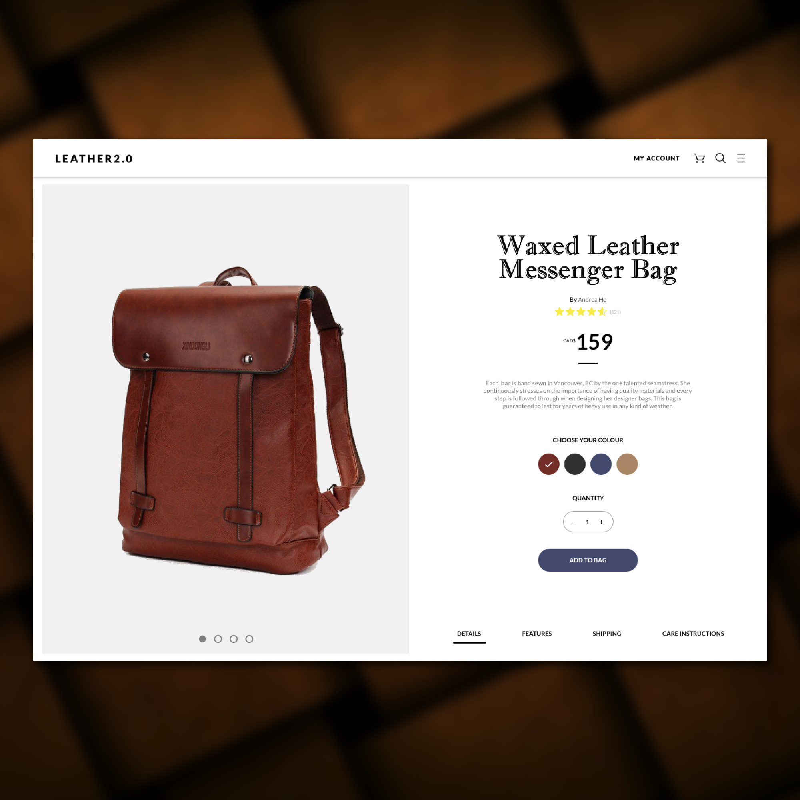

Day 80 - Leather Everything
Wow this was really fun to create. Once again, I'm striving for simplicity in all the websites I'm designing for. Today i focused on a single product and how I can fully utilize the screen without it looking crowded.
For the visual aspects of this page, I tried to play around with the image. As you can see, the image of the bag fills up half of the screen. Because users are drawn to quality pictures, by expanding the HD image, it draws the users in. Not only that, I've chosen this image from Google and it works well because it had a white background, making it look clean and important.
As for typography, I wanted to try something different - applying two different types of fonts. As usual, I used font Lato for all the basic areas such as paragraphs, small text areas, etc. However, for the product name, I decided to try something more on the fancy side: Font MT Imprint Shadow. This isn't a new font that I downloaded, but one that came with Sketch. It actually took me quite a while to find one that suited the design of this page. Next time, I should try to find something new from Skyfonts.
At the beginning when I was creating this design, a question popped into my head: In what order are designers "supposed" to create mockups? I realized that I've been creating the past designs from the top to bottom starting from simple shapes and text, then adding colours and texture after. I was wondering if there is another way (or an appropriate/better way) in designing webpages. Hopefully I'll have the chance to explore this question in the future by asking experienced UI designers.
Also, I added the ratings and comments function after I have finished everything. Not because I wanted to add it in last, but because I found it was an important feature to have. I know that for myself, I often rely on comments and ratings to determine if purchasing the product is a good choice or not. Having this function will allow users to fully express how they feel about the brand, the product or even their experience with it, which can really boost sales (if ratings/comments are positive).
Once again, I'm very satisified with this design. Even though there's not much, I've learned quite a bit for the past couple days just by designing very simple pages. It really helped me determine what's important for users when they plan to purchase the product.